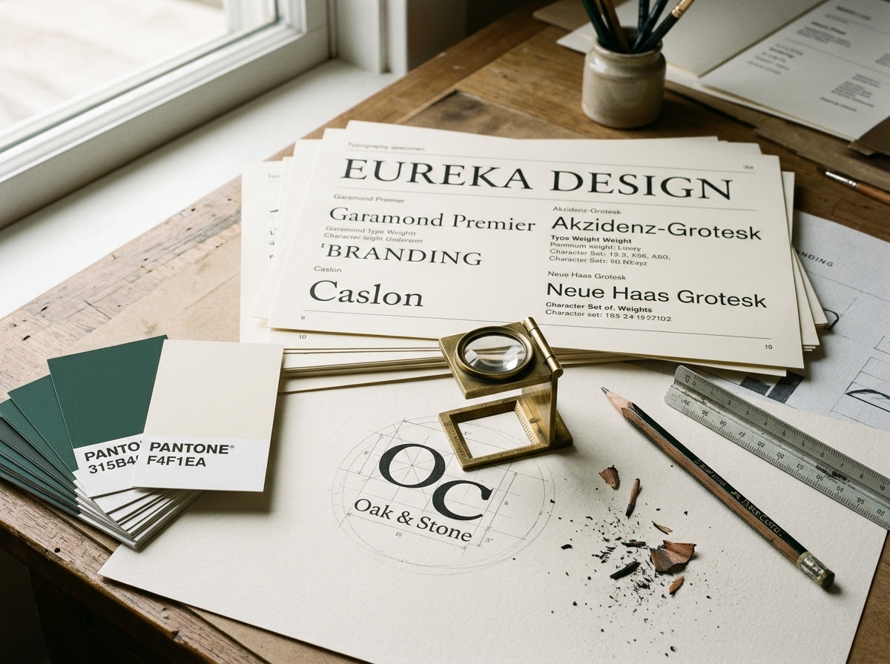
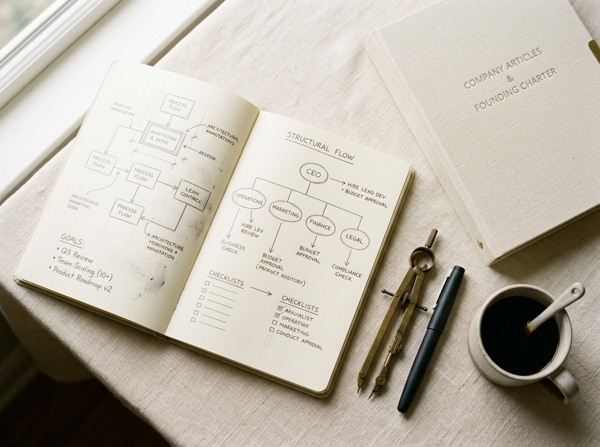

LINDUNGI NAMA BRAND ANDASEBELUM TERDAFTAR OLEHpihak LAIN.
BRANDCONNECT menggabungkan algoritma kecerdasan buatan (AI) dengan pendampingan konsultan HAKI terdaftar untuk menganalisis risiko kemiripan fonetik, mencocokkan kelas Nice Classification, memonitor peniruan di DJKI, dan mengamankan sertifikat merek (®) Anda secara resmi.
Lengkap dengan ekosistem pendukung bisnis: pendirian PT/CV, perizinan OSS (NIB), hingga registrasi izin edar BPOM dan sertifikasi Halal.
ZENOVA LIVINGTARGET: KELAS 35 // SIMULASI ANALISIS DJKI
88%
Skor Kelayakan AIPELUANG LOLOS TINGGI (RISIKO RENDAH)
01 // FONETIK & SUARA
Sangat Aman // Distingtif
Peluang lolos penelusuran fonetik DJKI sangat tinggi.
02 // VISUAL & EJAAN
Sangat Kuat // Coined Mark
Nama memiliki daya pembeda tinggi dan ideal didaftarkan.
03 // KELAS BARANG/JASA
Tepat // Kelas 35
Cakupan perlindungan sesuai kategori ritel & pemasaran.
04 // PASAL 20 & 21
Lolos Kriteria Penuh
Sesuai dengan kriteria pendaftaran resmi UU Merek No. 20/2016.
Ingin mengamankan merek ini sebelum didahului kompetitor?
Konsultasikan hasil cek ini langsung dengan Tim Ahli HAKI BRANDCONNECT.
Mulai dari riset nama merek dengan AI, pemilihan kelas Nice Classification, sistem pemantauan peniruan, hingga pondasi badan usaha PT/CV dan izin BPOM pendukung.
CARI KELAS BARANG & JASA. Secara Cerdas DENGAN AI.
Sertifikat merek hanya melindungi produk atau jasa pada kelas yang didaftarkan. Gunakan direktori cerdas kami untuk menemukan kelas yang tepat sebelum mendaftar ke DJKI.
🔍
KELAS 03BARANG
Kosmetik, Skincare & Produk Pembersih
Sediaan kosmetik, perawatan kulit (skincare), serum, sabun mandi, shampo, parfum, pembersih wajah, dan pasta gigi.
Segala jenis pakaian pria, wanita, dan anak-anak, kaos t-shirt, kemeja, celana, jaket, sepatu, sandal, topi, dan hijab.
Contoh: Brand Distro, Gamis, Sneakers, Hoodie, Batik Pakaian.
KELAS 29BARANG
Olahan Daging, Susu & Frozen Food
Daging, unggas, ikan olahan, buah dan sayuran yang diawetkan/beku, susu dan produk susu (keju, yoghurt), minyak goreng, dan camilan olahan kentang/kacang.
Layanan penyediaan makanan dan minuman siap saji, kedai kopi (coffee shop), rumah makan, kafetaria, katering acara, dan akomodasi penginapan.
Contoh: Resto Cepat Saji, Coffee Shop, Food Truck, Katering Diet.
AUTOMATED TRADEMARK DEFENSE
MONITORING MEREK. Cegah Peniruan SEBELUM TERLAMBAT.
DJKI memberikan masa sanggahan (oposisi) hanya 3 bulan setelah sebuah merek baru diumumkan di Berita Resmi Merek (BRM). Jika Anda terlambat menyanggah, merek peniru bisa terbit dan mengancam bisnis Anda secara sah.
MEREK ANDA // AKTIF
01 // AUTOMATED SCANNING
Pemindaian BRM Terjadwal
Algoritma AI BRANDCONNECT memindai setiap Berita Resmi Merek yang diterbitkan DJKI secara berkala dan akurat.
02 // SIMILARITY MATCHING
Deteksi Kemiripan Fonetik
Mendeteksi potensi peniruan pada kelas barang/jasa yang sama, baik kemiripan nama, lafal bunyi, maupun konsep logo visual.
03 // INSTANT ALERT
Peringatan Dini (Alert)
Notifikasi seketika melalui WhatsApp & Email saat terdeteksi permohonan merek pihak lain yang berpotensi merugikan Anda.
04 // LEGAL OPPOSITION
Pengajuan Oposisi Resmi
Didampingi konsultan HAKI untuk menyusun surat oposisi hukum sebelum masa pengumuman 3 bulan berakhir.
DJKI CERTIFICATION & IP LEGALITY
LAYANAN PERLINDUNGAN HAKI. Satu Pintu DENGAN KONSULTAN RESMI.
Dari permohonan pendaftaran baru, perpanjangan perlindungan 10 tahun, penanganan usulan penolakan, hingga perlindungan hak cipta dan desain kemasan produk Anda.
BC-01
Pendaftaran Merek Baru (DJKI)
Pengecekan mendalam, penyusunan etiket merek, pemilihan kelas Nice presisi, dan pengajuan resmi hingga sertifikat merek (®) terbit.
BC-02
Perpanjangan Merek (10 Tahun)
Pengurusan perpanjangan hak eksklusif merek sebelum masa berlaku 10 tahun berakhir, mencegah merek hangus atau diserobot kompetitor.
BC-03
Tanggapan Penolakan & Sanggahan Oposisi
Penyusunan argumentasi hukum dan bantahan resmi atas surat usulan penolakan DJKI maupun sanggahan oposisi dari pihak ketiga.
BC-04
Hak Cipta, Paten & Desain Industri
Perlindungan menyeluruh untuk karya seni logo, desain kemasan (packaging), modul pelatihan, formula produk, dan aset kreatif bisnis.
“Merek yang Anda bangun dengan dedikasi berhak atas perlindungan hukum eksklusif.”
DJKI RI COMPLIANTPASAL 20 & 21 UU MEREK
SUPPORTING BUSINESS FOUNDATION
LAYANAN PENDUKUNG BISNIS. Dari Fondasi HINGGA PRODUK SIAP EDAR.
Merek yang kuat membutuhkan badan usaha resmi dan perizinan edar yang valid. BRANDCONNECT menyediakan ekosistem pendukung terpadu untuk percepatan bisnis Anda.
AI TRADEMARK STRATEGY DIAGNOSTIC // VERSION 2.0READY TO START
INTERACTIVE TRADEMARK DIAGNOSTIC
PETAKAN STRATEGI PROTEKSI Merek & Bisnis ANDA.
Jawab 5 pertanyaan singkat untuk mendapatkan rekomendasi instan: potensi risiko merek, estimasi kelas Nice Classification yang wajib didaftarkan, serta kesiapan badan usaha pendukung.
OUTPUT DIAGNOSTIK BRANDCONNECT:5 TAHAP EVALUASI
01. Evaluasi Distingtif Nama Merek (Pasal 20 & 21)
02. Identifikasi Kelas Barang & Jasa (Nice Classification)
03. Analisis Risiko Konflik Kepemilikan Terdahulu
04. Kebutuhan Badan Usaha Pendukung (PT / CV / NIB)
05. Rencana Tindakan Proteksi & Konsultasi WhatsApp
TAHAP 01 // STATUS MEREK SAAT INI
Bagaimana status nama brand yang ingin Anda lindungi?
Pilih kondisi yang paling menggambarkan posisi bisnis Anda saat ini.
TAHAP 02 // SEKTOR BARANG ATAU JASA
Apa jenis produk atau layanan utama brand Anda?
Menentukan kelompok kelas barang (1-34) atau jasa (35-45) pada Nice Classification.
TAHAP 03 // ASET IDENTITAS
Elemen identitas apa saja yang ingin Anda amankan?
Pilih seluruh aset yang ingin dilindungi secara hukum.
TAHAP 04 // FONDASI BADAN USAHA
Apakah Anda sudah memiliki badan usaha resmi (PT/CV)?
Merek dapat dimiliki oleh perorangan maupun atas nama badan usaha perusahaan.
TAHAP 05 // KEBUTUHAN SERTIFIKASI PRODUK
Apakah produk Anda memerlukan izin edar BPOM atau Halal?
Khusus untuk kategori skincare, kosmetik, makanan, minuman, atau obat herbal.
AI TRADEMARK STRATEGY BLUEPRINT
Rekomendasi Strategi Proteksi Merek Anda
Berdasarkan jawaban diagnostik Anda, langkah prioritas utama adalah melakukan penelusuran fonetik mendalam di DJKI dan mendaftarkan nama merek pada kelas Nice Classification terkait sebelum meningkatkan anggaran pemasaran.
MENGAPA BRANDCONNECT? Presisi AI DENGAN KONSULTAN RESMI.
Kami memadukan efisiensi teknologi algoritma pencocokan fonetik dan radar peniruan dengan analisis hukum dari konsultan HAKI terdaftar di Kemenkumham RI.
01
Pengecekan AI Berlapis
Menganalisis kemiripan fonetik, ejaan visual, dan potensi benturan pasal 20 & 21 UU Merek dalam hitungan detik sebelum pengajuan.
02
Konsultan HAKI Berlisensi
Setiap berkas diverifikasi langsung oleh praktisi hukum dan konsultan kekayaan intelektual resmi untuk memastikan tingkat persetujuan tertinggi.
03
Radar Pemantauan 10 Tahun
Merek Anda dipantau secara otomatis dari Berita Resmi Merek (BRM) DJKI selama 10 tahun penuh agar tidak ada pihak yang meniru nama brand Anda.
EDITORIAL INSIGHTS & EDUCATION
WAWASAN HAKI & BISNIS. Pahami Sebelum MEMUTUSKAN.
Artikel panduan dari praktisi hukum kekayaan intelektual untuk membantu Anda memahami prinsip hukum merek, pemilihan kelas, dan strategi perlindungan brand.

HAKI · MEREK
ISSUE NO. 19 // PANDUAN MEREK
Sebelum Mendaftarkan Merek, Pahami 3 Hal Krusial Ini.
Prinsip First-to-File di Indonesia, cara menghindari nama generik/deskriptif, dan strategi penentuan kelas Nice yang akurat.
BACA ARTIKEL →

LEGALITAS · PT/CV
ISSUE NO. 14 // FONDASI BISNIS
Daftar Merek Atas Nama Pribadi vs Badan Usaha (PT/CV)?
Kelebihan dan kelemahan hukum kepemilikan merek atas nama perorangan dibandingkan entitas perseroan terbatas.
BACA ARTIKEL →
KEPATUHAN · BPOM
ISSUE NO. 23 // SIAP PASAR
Keterkaitan Merek DJKI dengan Pengurusan Izin Edar BPOM.
Mengapa bukti permohonan merek menjadi dokumen wajib saat Anda mengajukan notifikasi BPOM untuk produk fisik.
BACA ARTIKEL →
KONSULTASI RESMI HAKI
Konsultasi Proteksi Brand & Legalitas
✓
Permohonan Konsultasi Terkirim
Tim HAKI BRANDCONNECT akan menghubungi Anda via WhatsApp dalam waktu maksimal 1x24 jam kerja.